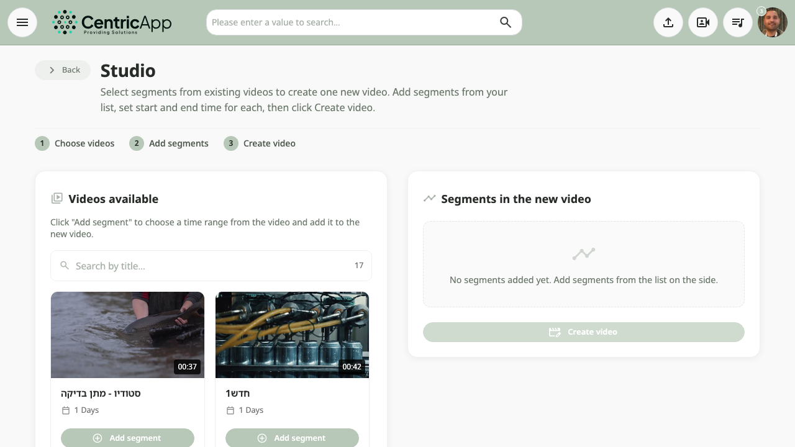
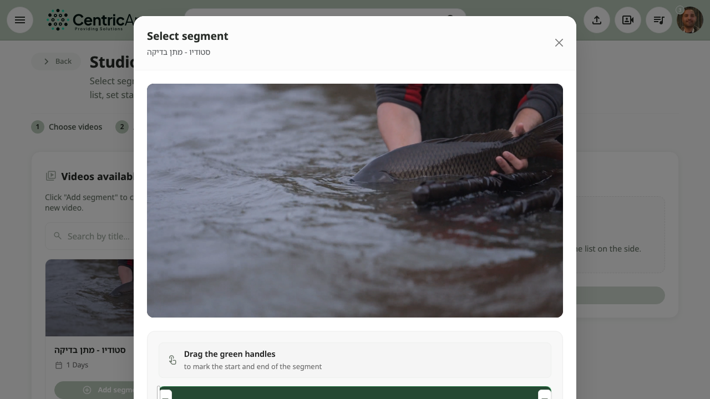
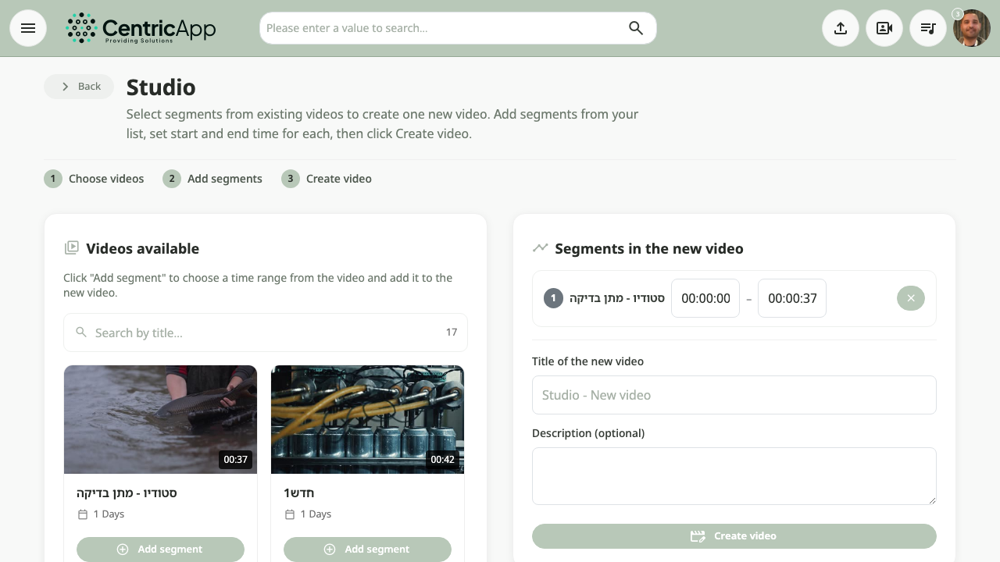

What is Studio?
Studio lets you create one new video that combines segments (time ranges) from different videos you uploaded to your channel. Unlike trimming a single video in video settings, here you can take a clip from video A, a clip from video B, and so on, and merge them into one video in the order you choose.
- 1 Choose videos
- 2 Add segments
- 3 Create video
Opening Studio
In the main menu (header), click Studio. If the option does not appear, the feature may be limited to administrators or disabled in system settings.

Available videos (left side)
In the Available videos tab, a list of videos from your channel that are available for segment selection is shown (usually videos you uploaded, not YouTube videos).
- Search – search field by title to narrow the list.
- For each video: thumbnail, duration, title, date, and an Add segment button.
Click Add segment next to the video you want to clip from.

Choosing a segment in the dialog (modal)
After clicking Add segment, a dialog opens with:
- A preview of the video.
- A timeline with two handles (start and end) to mark the time range included in the new video.
- Times: current, total, start, and end of the segment.
- Play segment button – preview the selected range.
How to choose the range
- Drag the green start handle to the time where the segment should begin.
- Drag the end handle to the time where the segment should end.
- You can also enter times manually in the «Start» and «End» fields (format 00:00:00).
- Click Play segment to verify the range is correct.
- Click Add segment at the bottom of the dialog to add the segment to the new video, or Cancel to close without adding.

Segments in the new video (right side)
Each segment you add appears in Segments in the new video with:
- Order number, source title, start and end times.
- Remove segment button – remove the segment from the list.
After adding at least one segment, fields for New video title and Description (optional) appear, along with a Create video button.

Creating the video
- Make sure there is at least one segment in the list.
- Enter a title for the new video (and a description if required).
- Click Create video.
The system creates the video in the background. A message will appear that the video was created and is being processed; it will appear in your channel when processing finishes.